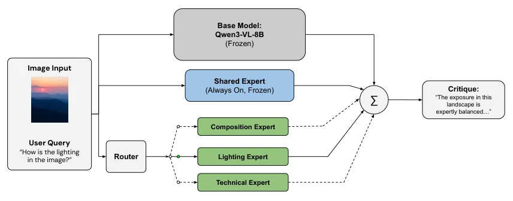
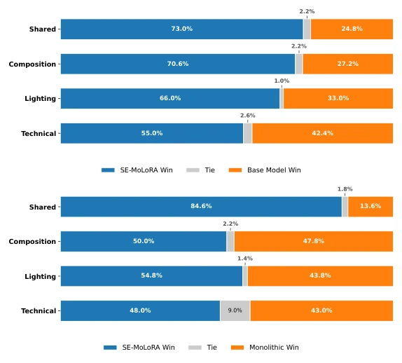
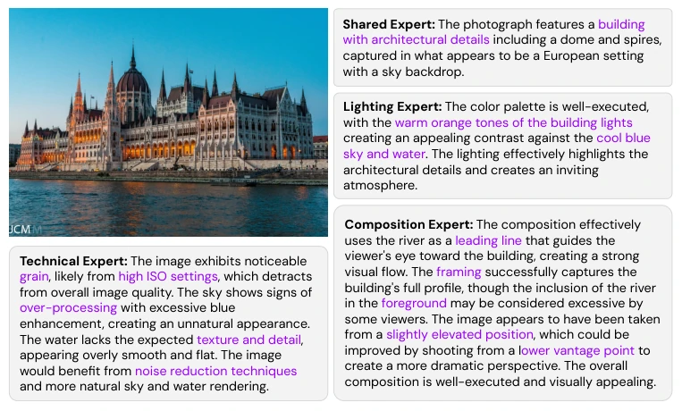
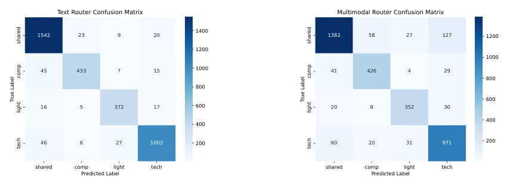
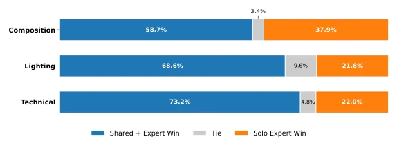
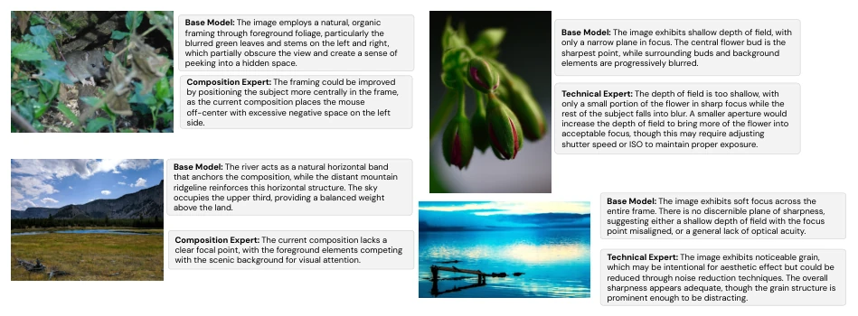

这篇论文试图用 LoRA 的模块化思路解决 VLM 在摄影评论中“懂内容不懂审美”的顽疾。SE-MoLoRA 把通用知识和专业残差分开，听起来很性感，毕竟“共享专家”+“路由”是 MoE 的变体。但说实话，这更像是在参数效率上玩平衡术，而非架构革命。虽然 BERTScore 提升了，但对比 PhotoEye 这种全参数微调的 SOTA，它在基准测试上还是输了，说明“轻量”是以牺牲部分性能为代价的。更尴尬的是，评测全靠 GPT-4o 当裁判，缺乏人类摄影师的真实反馈，这就像让 AI 评价 AI 写的诗，难免有“自嗨”嫌疑。另外，路由机制在模糊查询下表现不佳，还得靠视觉编码器兜底，增加了延迟。且系统每次仅激活一个专家，限制了多领域协同分析的能力。总之，这是个不错的垂直领域优化方案，但别指望它能颠覆通用视觉语言模型。
This paper attempts to use the modular approach of LoRA to solve the chronic issue of VLMs "understanding content but not aesthetics" in photography criticism. SE-MoLoRA separates general knowledge and professional residuals, which sounds appealing, after all "shared expert" + "routing" is a variant of MoE. But to be honest, this is more like performing a balancing act on parameter efficiency, rather than an architectural revolution. Although BERTScore improved, compared to PhotoEye, a SOTA with full-parameter fine-tuning, it still lost in benchmark tests, indicating that "lightweight" comes at the cost of sacrificing some performance. More awkwardly, the evaluation relies entirely on GPT-4o as the judge, lacking real feedback from human photographers; this is like letting AI evaluate poems written by AI, inevitably raising suspicions of "self-indulgence". Additionally, the routing mechanism performs poorly under fuzzy queries and still relies on the visual encoder as a fallback, increasing latency. Moreover, the system activates only one expert at a time, limiting the ability for multi-domain collaborative analysis. In conclusion, this is a decent vertical domain optimization scheme, but do not expect it to disrupt general vision-language models.
研究动机Motivation
现有 Vision-Language Models (VLMs) 虽然能流畅描述图像，但在提供可操作的摄影批评时往往失效，因为语义内容和审美判断纠缠在一起 (Jiang & Chen, 2025; Wang et al., 2025)。这种结构限制导致模型偏好语义上吸引人的主体而非技术判断，产生“光环效应” (Gulati et al., 2025)。现有的自动化审美评估方法各有短板：基于分数的方法 (Talebi & Milanfar, 2018) 无法提供洞察；单体 VLM 微调将所有审美领域合并，导致灾难性遗忘 (Ghosh et al., 2024; Li et al., 2024b)；为每个领域训练独立全尺寸模型则成本过高 (Houlsby et al., 2019)。Mixture-of-Experts (MoE) 架构虽提供模块化替代方案，但在模糊用户意图下表现不佳且训练昂贵 (Shazeer et al., 2017)。因此，需要一种模块化、参数高效且具备可靠路由机制的方法，将通用摄影知识与专业审美推理分离，避免知识表征的相互干扰。
Existing Vision-Language Models (VLMs), while capable of fluently describing images, often fail when providing actionable photography criticism, because semantic content and aesthetic judgment are entangled (Jiang & Chen, 2025; Wang et al., 2025). This structural limitation leads models to prefer semantically attractive subjects over technical judgments, producing a "halo effect" (Gulati et al., 2025). Existing automated aesthetic evaluation methods each have shortcomings: score-based methods (Talebi & Milanfar, 2018) cannot provide insights; single VLM fine-tuning merges all aesthetic domains, leading to catastrophic forgetting (Ghosh et al., 2024; Li et al., 2024b); training independent full-size models for each domain is too costly (Houlsby et al., 2019). Although the Mixture-of-Experts (MoE) architecture provides a modular alternative, it performs poorly under fuzzy user intent and is expensive to train (Shazeer et al., 2017). Therefore, a modular, parameter-efficient method with a reliable routing mechanism is needed to separate general photography knowledge from professional aesthetic reasoning, avoiding mutual interference of knowledge representations.
SE-MoLoRA is built based on Qwen3-VL-8B, adopting a three-layer architecture: frozen base model, always-activated shared LoRA adapter (Rank-64), and conditionally activated expert adapters (Rank-32). Training adopts a three-stage residual learning process: first, train the shared expert to capture general photography vocabulary; second, merge its weights into the base model to prevent subsequent gradient interference; finally, independently train three domain experts (composition, lighting, technique), utilizing an orthogonal regularization term to penalize cosine similarity between weight matrices, ensuring representation decoupling. During inference, experts are selected via a lightweight router, with total weight being base plus shared item plus selected expert item. To mitigate the potential dominant role of the shared expert during inference, asymmetric weights are adopted (shared 0.5, expert 1.5). Regarding data, LLMs are used to distill the Reddit Photo Critique Dataset (RPCD) into domain-labeled samples. The routing mechanism offers text and bimodal options; the latter can utilize visual cues to handle fuzzy queries but has higher latency.

Figure 1: The SE-MoLoRA architecture. A shared adapter handles general photographic knowledge, while specialized adapters for composition, lighting, and technical aspects are conditionally activated based on the router’s decision.
Experiments are based on the distilled RPCD dataset, comparing zero-shot base models and single LoRA baselines. Evaluation metrics include BERTScore-F1, ROUGE-L, and pairwise comparisons with GPT-4o as judge. Results show that SE-MoLoRA's shared expert BERTScore-F1 reached 0.4215, significantly outperforming single LoRA's 0.2317, and won in pairwise comparisons with an 84.6% win rate. SVD analysis indicates that orthogonal regularization reduced the entanglement between experts from approximately 0.63 to 0.42. Ablation studies confirm the shared expert is indispensable; after removal, expert performance drops and entanglement increases. Regarding routing, the multimodal router outperforms the pure text router on Q-Bench and PhotoBench, although inference latency is higher. Although not as good as full-parameter models like PhotoEye on benchmarks, it achieved better domain specificity under parameter efficiency constraints.

Figure 2: LLM-as-a-Judge Evaluation Win Rates of the SE-MoLoRA architecture against the zero-shot base model (Top) and the monolithic adapter (Bottom).

Figure 3: Qualitative comparison between responses from each expert for the same image (Sample Taken from RPCD Nieto et al. (2022)). Domain-specific vocabulary for each expert is highlighted in purple.

Figure 5: Confusion matrix for the text-only and multimodal router.

Figure 6: Ablation results showing the impact of the shared expert on win rates with LLM-as-judge.

Figure 7: Qualitative comparison of SE-MoLoRA and base model on adversarial images (Sample Taken from RPCD Nieto et al. (2022)).